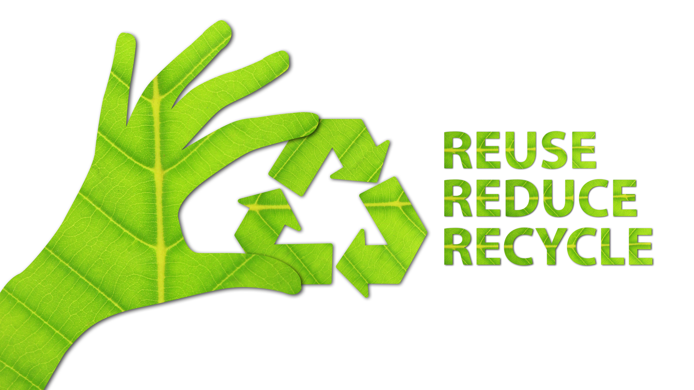
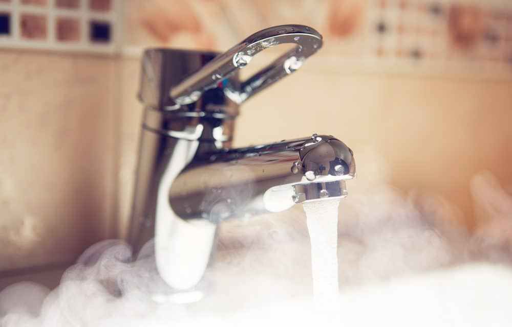
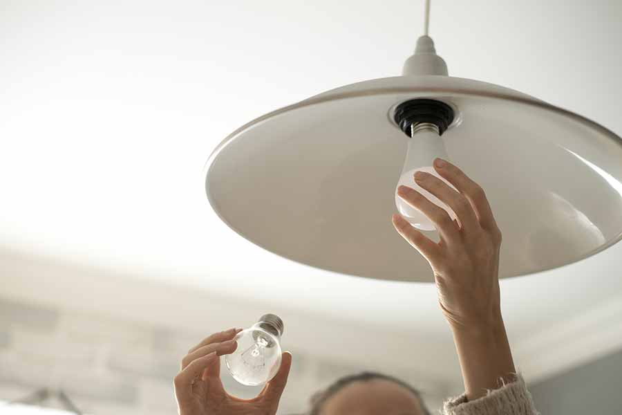
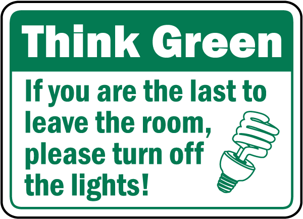
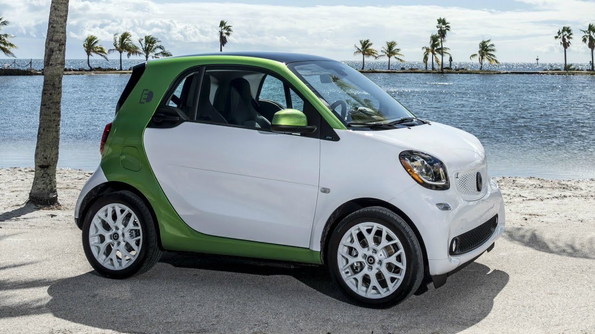

We need to take action against global warming immediately. Global warming has negatively impacted our economy, food, water, health, society etc. If we don’t act now, the effects will become irreversible. Humans will need to change their daily routines and the way they act/behave. You can make a difference by using resources more efficiently and using less waste. Scientists are working on new creations and inventions that will help us reduce our greenhouse gas emissions. Furthermore, scientists are currently finding new ways to extract carbon dioxide from our air. Planting trees are one of the best ways to remove carbon dioxide from our air. However, trees are being cut down at a alarming rate. If all the trees that were cut down were restored, they could extract 2.5 gigatons of carbon dioxide from our air.
Reduce your need to purchase new products in order to reduce the amount of waste created. Try to buy products that have less packaging so they don’t end up in landfills or the ocean. Landfills produce methane and other greenhouse gases. When you burn waste, very toxic chemicals are released into the air. Reuse reusable products that you already have such as: water bottles, containers, bags etc. By reusing these products, you are reducing your need to purchase more products. You can also borrow things that you only need for a short period of time. In addition, if you are going to use disposable products, try to find a way to make them reusable. Recycling items such as paper, plastic water bottles, and cardboard are great ways to reduce the amount of waste you create. The products that you recycle can be made into new products. By doing this, you are reducing the amount of waste that ends up in landfills.
Try and avoid using hot water to wash dishes or your clothes. Use cold water instead as it uses less energy than hot water. Furthermore, take less frequent or shorter showers in order to save the energy required to produce that energy. Don’t forget to leave taps and sinks running.
If your not using or in a room, remember to turn off the lights to save energy. Also, you can replace incandescent light bulbs with LED light bulbs. LED bulbs use 75 percent less energy than incandescent bulbs and have a longer life span. Furthermore, you can invest in solar energy and purchase solar panels. Solar panels allow you to have a renewable and readily available source of energy. Always purchase items that are energy efficient. You should turn off electronic devices that you are not using such as your computers in order to reduce energy consumption.
 
Electric/Smart cars are one of the best transportation methods out there in terms of carbon dioxide emissions. These smart cars produce almost no air pollution and have an extremely low maintenance cost. Since they use electricity instead of petroleum, they do not release any pollutants into the environment. There are many different types of renewable energy sources such as solar, wind, hydropower, and biomass energy. Solar energy uses the sun’s energy to produce electricity. Windmills use the wind to power generators which create electricity. Hydropower energy uses the flow of water to produce electricity. Biomass energy is renewable energy that comes from plants and animals.


 HTML Validator
CSS Validator
HTML Validator
CSS Validator